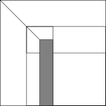
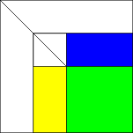
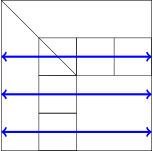
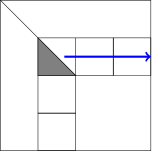
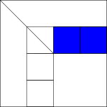
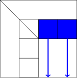
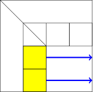

Applications of Parallel Computers
Parallel LU
Prof David Bindel
Please click the play button below.
Reminder: Evolution of LU
On board... or not.
Normally, I go through how LU factorization on the board. It slows me down and keeps me honest. If you ask, I will do the same this time during our meetings. Alas, this style of slides doesn’t encourage boardwork, so let’s also try sketching our way through this in slides.
LU by example
\[
\begin{bmatrix}
1 & 2 & 3 \\
4 & 5 & 6 \\
7 & 8 & 10
\end{bmatrix}
\begin{bmatrix} x \\ y \\ z \end{bmatrix} =
\begin{bmatrix} 4 \\ 13 \\ 22 \end{bmatrix}
\]
We’ll start with a three-by-three linear system. That is, we are writing three equations in three unknowns, using matrix notation. When you first saw this, you were talked an algorithm for solving such systems: Gaussian elimination. Let’s go through the elimination algorithm with maybe a slightly different notation from the one you are used to.
LU by example
\[
\begin{bmatrix}
1 & 0 & 0 \\
-4 & 1 & 0 \\
-7 & 0 & 1
\end{bmatrix}
\left(
\begin{bmatrix}
1 & 2 & 3 \\
4 & 5 & 6 \\
7 & 8 & 10
\end{bmatrix}
\begin{bmatrix} x \\ y \\ z \end{bmatrix} =
\begin{bmatrix} 4 \\ 13 \\ 22 \end{bmatrix}
\right)
\]
The first step of Gaussian elimination is subtracting multiples of the first row from rows two and three in order to introduce zeros in the first column. We have to apply this operation to both the matrix rows and to the right hand side vector. We’ve written the operation here in matrix form: we leave the first row alone, replace the second row with itself minus four times the first row, and replace the third row with itself minus seven times the third row. The numbers 4 = 4/1 and 7 = 7/1 are the multipliers in the algorithm.
LU by example
\[
\begin{bmatrix}
1 & 2 & 3 \\
0 & -3 & -6 \\
0 & -6 & -11
\end{bmatrix}
\begin{bmatrix} x \\ y \\ z \end{bmatrix} =
\begin{bmatrix} 4 \\ -3 \\ -6 \end{bmatrix}
\]
After we apply the transformation, we are left with this linear system. Now we have zeros below the first diagonal, but there is still a nonzero in the (3, 2) position that we need to clear.
LU by example
\[
\begin{bmatrix}
1 & 0 & 0 \\
0 & 1 & 0 \\
0 & -2 & 1 \\
\end{bmatrix}
\left(
\begin{bmatrix}
1 & 2 & 3 \\
0 & -3 & -6 \\
0 & -6 & -11
\end{bmatrix}
\begin{bmatrix} x \\ y \\ z \end{bmatrix} =
\begin{bmatrix} 4 \\ -3 \\ -6 \end{bmatrix}
\right)
\]
So, we apply another transformation, subtracting twice the second row off the third row. 2 = -6/-3 is the multiplier in this case.
LU by example
\[
\begin{bmatrix}
1 & 2 & 3 \\
0 & -3 & -6 \\
0 & 0 & 1
\end{bmatrix}
\begin{bmatrix} x \\ y \\ z \end{bmatrix} =
\begin{bmatrix} 4 \\ -3 \\ 0 \end{bmatrix}
\]
After this second step, we have an upper triangular linear system, which we can solve by back-substitution. The solution is z = 0, then y = 1, and then x = 2.
LU by example
\[
\begin{bmatrix}
1 & 0 & 0 \\
4 & 1 & 0 \\
7 & 2 & 1
\end{bmatrix}
\begin{bmatrix}
1 & 2 & 3 \\
0 & -3 & -6 \\
0 & 0 & 1
\end{bmatrix} =
\begin{bmatrix}
1 & 2 & 3 \\
4 & 5 & 6 \\
7 & 8 & 10
\end{bmatrix}
\]
We could get from our upper triangular matrix back to the original matrix by “undoing” the operations that occurred during elimination. We got the third row of U by taking the last row of A and subtracting seven times the first row in the first step, and twice the second row in the second step. To recover the last row of A, we take the last row of U and add back twice the second row of U and seven times the first row of U. Et voila! Similarly, we can reconstruct the second row of A from the first two rows of U; and the first row of A is the same as the first row of U.
What we have just said in words is that Gaussian elimination can really be seen as factoring A into a unit lower triangular matrix L containing the multipliers in the algorithm (remember, this means lower triangular with ones on the main diagonal) times an upper triangular matrix U. This is the so-called LU decomposition.
Simple LU
Overwrite \(A\) with \(L\) and \(U\)
for j = 1:n-1
for i = j+1:n
A(i,j) = A(i,j) / A(j,j); % Compute multiplier
for k = j+1:n
A(i,k) -= A(i,j) * A(j,k); % Update row
end
end
end
We can write the LU decomposition as three nested loops, incrementally overwriting the matrix A with the multipliers in L and the upper triangular matrix U. This is basically the reduction to upper triangular form, we’re just using the structural zeros that we introduce as spaces where we can stash the associated multipliers.
This whole business with three nested loop is pretty common in dense linear algebra, by the way. It’s a business where almost everything costs n^3 time. But it’s with n^2 data, and we know by now that this is a promising sign!
Simple LU
Overwrite \(A\) with \(L\) and \(U\)
for j = 1:n-1
A(j+1:n,j) = A(j+1:n,j)/A(j,j); % Compute multipliers
A(j+1:n,j+1:n) -= A(j+1:n,j) * A(j, j+1:n); % Trailing update
end
We can write the LU decomposition more compactly using MATLAB notation for slices of matrices. This says we store the multipliers in rows j+1 through n of column j of A, and then update the trailing submatrix in rows and columns j+1 through n by subtracting off the multipliers times row j.
Pivoting
Stability is a problem! Compute \(PA = LU\)
p = 1:n;
for j = 1:n-1
[~,jpiv] = max(abs(A(j+1:n,j))); % Find pivot
A([j, j+jpiv-1],:) = A([j+jpiv-1, j]); % Swap pivot row
p([j, j+jpiv-1],:) = p([j+jpiv-1, j]); % Save pivot info
A(j+1:n,j) = A(j+1:n,j)/A(j,j); % Compute multipliers
A(j+1:n,j+1:n) -= A(j+1:n,j) * A(j, j+1:n); % Trailing update
end
You may recall that Gaussian elimination needs a tweak when we hit a zero pivot. That’s in exact arithmetic; it turns out that even close-to-zero pivots are a problem in floating point. So we usually do Gaussian elimination with partial pivoting; that means that at each step, before subtracting multiples of one row from another to introduce zeros in column j, we permute the rows in order to move the biggest entry in column j up to the diagonal. This ensures all the multipliers are less than one in magnitude, and helps a lot with stabilizing the method.
Blocking
Think in a way that uses level 3 BLAS \[
\begin{bmatrix} A_{11} & A_{12} \\ A_{21} & A_{22} \end{bmatrix} =
\begin{bmatrix} L_{11} & 0 \\ L_{21} & L_{22} \end{bmatrix}
\begin{bmatrix} U_{11} & U_{12} \\ 0 & U_{22} \end{bmatrix}
\]
Let’s put aside pivoting for a moment to bring in one final idea, that of blocking. This is essentially the same concept we saw when we were talking about matrix-matrix multiply. It’s easiest to show how it works by writing out the equations that a block 2-by-2 version of LU factorization should satisfy.
Blocking
Think in a way that uses level 3 BLAS \[
\begin{bmatrix} A_{11} & A_{12} \\ A_{21} & A_{22} \end{bmatrix} =
\begin{bmatrix}
L_{11} U_{11} & L_{11} U_{12} \\
L_{21} U_{11} & L_{21} U_{12} + L_{22} U_{22}
\end{bmatrix}
\]
Now we explicitly multiply out the two triangular matrices, and we get equations that match submatrices of A with products of pieces of L and U.
Blocking
Think in a way that uses level 3 BLAS \[\begin{aligned}
L_{11} U_{11} &= A_{11} \\
U_{12} &= L_{11}^{-1} A_{12} \\
L_{21} &= A_{21} U_{11}^{-1} \\
L_{22} U_{22} = A_{22} - L_{21} U_{12}
\end{aligned}\]
Ordering the equations in the previous slide from top left to bottom right gives us a block algorithm for computing the LU factorization. First, do LU factorization of the leading submatrix A11. Then do triangular solves with L11 in order to get the leading block row of U, and with U11 in order to get the leading block column of L. Finally, subtract the outer product of that leading block column and block row from the trailing submatrix; this is sometimes called the Schur complement update. Finally, recursively do LU factorization (possibly with blocking) on the Schur complement.
Enter pictures
Still haven’t showed how to do pivoting!
Easier to draw diagrams from here
Take 6210 or 4220 if you want more on LU!
That’s the lightning version of Gaussian elimination with partial pivoting, also known as GEPP, also known as pivoted LU factorization. Of course, I haven’t really written out the code to do both pivoting and blocking simultaneously, but this isn’t really the class for that. If you want to see me write something like this out in detail, wait for a semester when I’m teaching CS 6210 or CS 4220!
I’d like to tell you know how to do Gaussian elimination fast, both on a single core or shared memory machine and in a distributed memory environment. But rather than trying to write details from here, let me draw pictures and wave my hands. Of course, you can’t see me wave my hands, so I’d better add that to the narration script. Wave, wave. Wave, wave.
Blocked GEPP
Find pivot
So suppose we’ve gotten partway through Gaussian elimination, and are handling a step somewhere in the middle. What do we do? The first thing we have to do is search the current column for a pivot.
Blocked GEPP
Swap pivot row
Once we have found the largest entry in the column, we swap it for the current row.
Blocked GEPP

Update within block column
Now we’re set to do an update, subtracting multiples of the current row from the remaining rows. Here, though, we’re going to do something a little different from the simple codes we wrote out explicitly. Rather than applying the updates all the way across the matrix, we will just update within the block column that we are currently processing – which involves touching less memory.
Blocked GEPP

Delayed update (at end of block)
Of course, we can’t put off the full updates for ever. Once we get to the end of the block, we will apply them all at once. This is a level 3 BLAS routine, since most of the work is going into multiplying a block of L by a block of U. And we know how to make matrix multiply fast!
Big idea
Delayed update strategy lets us do LU fast
Could have also delayed application of pivots
Same idea with other one-sided factorizations (QR)
Decent multi-core speedup with parallel BLAS!\(n\) sufficiently large.
Issues left over (block size?)...
The delayed update strategy is fantastic for letting us accelerate LU factorization. In the algorithm I’ve sketched out, we don’t delay the application of the row exchanges for pivoting, but we could certainly do that as well. Something like this strategy works with other so-called “one-sided” factorizations as well, though we need additional ideas to tackle eigenvalue computations.
Explicit parallelization of GE
What to do:
Decompose into work chunksAssign work to threads in a balanced wayOrchestrate communication + synchronizationMap which processors execute which threads
So far, we’ve drawn pictures where we might get parallelism through the BLAS, but otherwise the process is basically sequential. What should we do to explicitly parallelize the algorithm? The answer is we have to figure out how to break the problem into chunks, assign those chunks to different processors in a work-balanced way, and orchestrate the whole process with communication between the processors and any necessary synchronization.
We’ll start with how we decompose the problem.
Possible matrix layouts
How should we share the matrix across ranks?
Or, rather, we’ll start with how to decompose the matrix data! Data layout is itself not such a simple thing.
1D col blocked
\[\begin{bmatrix}
0 & 0 & 0 & 1 & 1 & 1 & 2 & 2 & 2 \\
0 & 0 & 0 & 1 & 1 & 1 & 2 & 2 & 2 \\
0 & 0 & 0 & 1 & 1 & 1 & 2 & 2 & 2 \\
0 & 0 & 0 & 1 & 1 & 1 & 2 & 2 & 2 \\
0 & 0 & 0 & 1 & 1 & 1 & 2 & 2 & 2 \\
0 & 0 & 0 & 1 & 1 & 1 & 2 & 2 & 2 \\
0 & 0 & 0 & 1 & 1 & 1 & 2 & 2 & 2 \\
0 & 0 & 0 & 1 & 1 & 1 & 2 & 2 & 2 \\
0 & 0 & 0 & 1 & 1 & 1 & 2 & 2 & 2
\end{bmatrix}\]
Maybe the simplest data layout is 1D column blocked. We saw this layout in our initial straw-man for how to do matrix-matrix multiply. It wasn’t a great idea there, and it is even worse for Gaussian elimination. The problem is that it has terrible load balance: when we are updating within a column panel, all the work may be falling on one processor; and when we are doing the Schur complement update, we will generally only engage a subset of the processors, leaving the early processors idle as soon as we have eliminated all the variables associated with their columns.
1D col cyclic
\[\begin{bmatrix}
0 & 1 & 2 & 0 & 1 & 2 & 0 & 1 & 2 \\
0 & 1 & 2 & 0 & 1 & 2 & 0 & 1 & 2 \\
0 & 1 & 2 & 0 & 1 & 2 & 0 & 1 & 2 \\
0 & 1 & 2 & 0 & 1 & 2 & 0 & 1 & 2 \\
0 & 1 & 2 & 0 & 1 & 2 & 0 & 1 & 2 \\
0 & 1 & 2 & 0 & 1 & 2 & 0 & 1 & 2 \\
0 & 1 & 2 & 0 & 1 & 2 & 0 & 1 & 2 \\
0 & 1 & 2 & 0 & 1 & 2 & 0 & 1 & 2 \\
0 & 1 & 2 & 0 & 1 & 2 & 0 & 1 & 2
\end{bmatrix}\]
In a 1D cyclic layout, we assign column j to processor j mod p. A 1D cyclic layout gets rid of some of the load balance issues, but it causes new issues. Remember how we wanted to deal with a block of columns at a time for effective cache use? That’s hard with 1D cyclic layouts! It’s hard to use even BLAS 2 with this layout, let alone BLAS 3.
1D col block cyclic
\[\begin{bmatrix}
0 & 0 & 1 & 1 & 2 & 2 & 0 & 0 & 1 & 1 \\
0 & 0 & 1 & 1 & 2 & 2 & 0 & 0 & 1 & 1 \\
0 & 0 & 1 & 1 & 2 & 2 & 0 & 0 & 1 & 1 \\
0 & 0 & 1 & 1 & 2 & 2 & 0 & 0 & 1 & 1 \\
0 & 0 & 1 & 1 & 2 & 2 & 0 & 0 & 1 & 1 \\
0 & 0 & 1 & 1 & 2 & 2 & 0 & 0 & 1 & 1 \\
0 & 0 & 1 & 1 & 2 & 2 & 0 & 0 & 1 & 1 \\
0 & 0 & 1 & 1 & 2 & 2 & 0 & 0 & 1 & 1 \\
0 & 0 & 1 & 1 & 2 & 2 & 0 & 0 & 1 & 1 \\
0 & 0 & 1 & 1 & 2 & 2 & 0 & 0 & 1 & 1
\end{bmatrix}\]
1D column block cyclic: block column factorization a bottleneck A 1D column block cyclic layout has some of the advantages of a column block layout, and some of the advantages of the block cyclic layout. It’s still not perfect, though, as the block column factorization becomes a serial bottleneck.
Block skewed
\[\begin{bmatrix}
0 & 0 & 0 & 1 & 1 & 1 & 2 & 2 & 2 \\
0 & 0 & 0 & 1 & 1 & 1 & 2 & 2 & 2 \\
0 & 0 & 0 & 1 & 1 & 1 & 2 & 2 & 2 \\
2 & 2 & 2 & 0 & 0 & 0 & 1 & 1 & 1 \\
2 & 2 & 2 & 0 & 0 & 0 & 1 & 1 & 1 \\
2 & 2 & 2 & 0 & 0 & 0 & 1 & 1 & 1 \\
1 & 1 & 1 & 2 & 2 & 2 & 0 & 0 & 0 \\
1 & 1 & 1 & 2 & 2 & 2 & 0 & 0 & 0 \\
1 & 1 & 1 & 2 & 2 & 2 & 0 & 0 & 0
\end{bmatrix}\]
We could also do something with block skewed indexing. This is a 2D layout where blocks on the same diagonal are assigned to the same processor. It’s effectively the layout we have after doing the cyclic permutations in Cannon’s matrix multiply algorithm. Unfortunately, as we mentioned in our discussion of Cannon’s algorithm, it’s a little restrictive and the indexing gets quite messy.
2D block cyclic
\[\begin{bmatrix}
0 & 0 & 1 & 1 & 0 & 0 & 1 & 1 \\
0 & 0 & 1 & 1 & 0 & 0 & 1 & 1 \\
2 & 2 & 3 & 3 & 2 & 2 & 3 & 3 \\
2 & 2 & 3 & 3 & 2 & 2 & 3 & 3 \\
0 & 0 & 1 & 1 & 0 & 0 & 1 & 1 \\
0 & 0 & 1 & 1 & 0 & 0 & 1 & 1 \\
2 & 2 & 3 & 3 & 2 & 2 & 3 & 3 \\
2 & 2 & 3 & 3 & 2 & 2 & 3 & 3 \\
\end{bmatrix}\]
A simpler thing to do is a 2D block cyclic layout. This is like the 1D block cyclic layout, except that we cycle assignment of row blocks as well as of column blocks.
Possible matrix layouts
1D col blocked: bad load balance
1D col cyclic: hard to use BLAS2/3
1D col block cyclic: factoring col a bottleneck
Block skewed (a la Cannon): just complicated
2D row/col block: bad load balance
2D row/col block cyclic: win!
And, indeed, ScaLAPACK uses a 2D block cyclic layout for matrices. And I assume SLATE will do the same!
So, supposing we’ve used a 2D block cyclic layout to partition our matrix A across processors, how should we think about Gaussian elimination?
Distributed GEPP
Find pivot (column broadcast)
If we’re going to do partial pivoting, the first step for eliminating column j remains the pivot search. This involves communicating across all processors involved in column j. I’ve written broadcast here, but really I should have probably said “reduction,” since finding the max of a set of elements is a type of reduction operation.
Distributed GEPP
Swap pivot row within block column + broadcast pivot
Once we’ve found the pivot row, we apply a swap, at least within the block column. We’re going to want that pivot row for the update step, so this really is a broadcast operation, not just a point-to-point between the processor that owns row j and the one that owns the pivot row.
Distributed GEPP
Update within block column
With pivot in hand, everyone can independently update their piece of the current block column.
Distributed GEPP

At end of block, broadcast swap info along rows
When we get to the end of a block, we broadcast the set of swaps that we’ve made to be applied across the rest of the rows involved - that is, we basically always delay the pivot application in the distributed memory case, even if we might not bother in the single-core case.
Distributed GEPP
Apply all row swaps to other columns
Once everyone knows what row swaps have to be made, we do whatever communication is needed to actually apply them.
Distributed GEPP

Broadcast block \(L_{II}\) right
Now we want to compute a block row of U. To do this, all the processors that own the corresponding block row of A need to get the lower triangular block that we just computed.
Distributed GEPP

Update remainder of block row
Once we have the diagonal block of L, everyone can compute their part of the block row of U without further communication.
This finishes the computation of the block row of U and block column of L; the next step is the Schur complement update.
Distributed GEPP

Broadcast rest of block row down
We start the Schur complement computation by broadcasting the row of U down to the processors that own the trailing submatrix.
Distributed GEPP

Broadcast rest of block col right
Distributed GEPP
Update of trailing submatrix
And, finally, everyone has the data they need to apply the update without further communication.
Cost of ScaLAPACK GEPP
Communication costs:
Lower bound: \(O(n^2/\sqrt{P})\) words, \(O(\sqrt{P})\) messages
ScaLAPACK:
\(O(n^2 \log P / \sqrt{P})\) words sent\(O(n \log p)\) messagesProblem: reduction to find pivot in each column
Tournaments for stability without partial pivoting
If you don’t care about dense LU?
The algorithm that we just described is within a log factor of optimal in the amount of data sent, but it ends up sending a lot of messages. Part of the reason for the number of messages is that at every step, we have to apply a collective op in order to find the pivot row! Alternate pivoting strategies have been developed that involve less communication, using tournaments to find a “good enough” pivot at each step; but I’m not going to go into that now.
Some of you may be asking at this point “why have I just listened to this many slides about dense Gaussian elimination?” You may feel that you don’t care that much about linear algebra, sad as it makes me to admit such a possibility. But maybe you still care about this computational pattern, because it shows up in other places, too.
Floyd-Warshall
Goal: All pairs shortest path lengths.\[d_{ij}^{(k)} =
\mbox{shortest path $i$ to $j$ with intermediates in $\{1, \ldots, k\}$}.\] Then \[d_{ij}^{(k)} =
\min\left( d_{ij}^{(k-1)}, d_{ik}^{(k-1)} + d_{kj}^{(k-1)} \right)\] and \(d_{ij}^{(n)}\) is the desired shortest path length.
Let’s consider a problem that looks completely different: that of finding the shortest distances between every pair of vertices in a graph. One of the standard methods for this problem is the Floyd-Warshall algorithm. Floyd-Warshall is a dynamic programming approach that involves a recurrence on shortest paths that involve only nodes 1 through k for increasing values of k.
It’s OK if you want to stare at this slide for a moment. Or if you want to look at the Wikipedia page for Floyd-Warshall. I’ll wait.
The same and different
Floyd’s algorithm for all-pairs shortest paths:
for k=1:n
for i = 1:n
for j = 1:n
D(i,j) = min(D(i,j), D(i,k)+D(k,j));Unpivoted Gaussian elimination (overwriting \(A\) ):
for k=1:n
for i = k+1:n
A(i,k) = A(i,k) / A(k,k);
for j = k+1:n
A(i,j) = A(i,j)-A(i,k)*A(k,j);
Let’s compare these two unrelated-looking algorithms: Floyd-Warshall and unpivoted Gaussian elimination.
You may notice that there are a lot of similarities!
The same and different
The same: \(O(n^3)\) time, \(O(n^2)\) space
The same: can’t move \(k\) loop (data dependencies)
... at least, can’t without care!
Different from matrix multiplication
The same: \(x_{ij}^{(k)} = f\left(x_{ij}^{(k-1)}, g\left(x_{ik}^{(k-1)}, x_{kj}^{(k-1)}\right)\right)\)
Same basic dependency pattern in updates!
Similar algebraic relations satisfied
Different: Update to full matrix vs trailing submatrix
What is the same? Both algorithms are n^2 time and n^2 space. Both involve an inner loop that can’t be moved without some care, because of data dependencies – this is different from the case of matrix multiplication, for example. The basic pattern of the updates is the same, too. The main difference is really that Floyd-Warshall updates the full matrix where Gaussian elimination only updates a trailing submatrix.
How far can we get?
How would we write
Cache-efficient (blocked) serial implementation?
Message-passing parallel implementation?
The full picture could make a fun class project...
In fact, we could take almost all of the tricks that we just described for blocking and parallelization of Gaussian elimination and apply them to Floyd-Warshall! I have done exactly that as a project for this class in the past; you are welcome to play with it for a final project if you are still looking.
Onward!
Next up: Sparse linear algebra and iterative solvers!
There is a great deal more that I could say about dense linear algebra. Indeed, I teach a graduate course that is almost entirely dense linear algebra, and without the HPC angle! But 5220 is not that class, and I’ve used the time that I planned to use to talk about dense matrix computations. We still have a week to talk about sparse linear algebra, though, and we will take that topic up next.
Until next time!